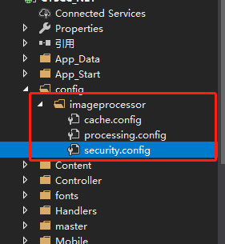

之前的博客里聊过，以后会注重一些偏底层，偏基础的内容分享，现在还是在整理吧，因为越底层的内容，越需要有透彻的了解，后边在慢慢积累吧。
今天还是先介绍点别的，我们在之前的项目里，遇到了一个非常烦人的需求——处理图片。
一张图，要在不同的页面展示，每个页面的尺寸也不一样，想了很多办法，始终是满足不了主管老师的心意，所以开始的时候，我们就在管理后台加了好多个上传图片的入口，由设计的同学分别根据展示位置设计不同尺寸的图片，注意这里的不同尺寸不单单是简单的缩放，还要根据图片展示位置的大小，进行一些裁剪然后缩放。
开始，我们的业务不多，设计的同学时间也充裕，所以问题不太大，但越到后期，发现越来越手忙脚乱，一是图片展示位太多，设计和开发都非常容易搞混，导致上传图片的时候也容易传错，二是占用大量设计的时间。所以这个方案完全不可取。
最终，我们还是回到了开始的方案，通过程序来完成自动的适配和裁剪，设计的同学每次只需要设计一张图，但是需要提供图片的一些参数和裁剪规则，如果不涉及裁剪，则完全可以根据页面展示位来自己处理，但涉及到裁剪后，就不能自己看着来了，要提前沟通好。
最开始的方案，裁剪程序是我们自己写的，思路也很简单，就是根据指定的规则，对图片进行重画，然后生成新的图片。
这个也并没有太大的问题，唯一存在的就是一些效率问题和通用性问题。
而由于我之前使用过阿里的oss以及百度的bos，他们都提供了一种关于处理图片非常便捷高效的方式，就是在图片URL链接后面，输入指定的参数，就可以对图片进行裁剪，缩放等操作。便查了一下实现原理，然后搜索了一下在dotnet平台下有没有类似的解决方案。
果然，还真有！啰嗦了半天，上主角吧
先看官方文档：https://imageprocessor.org/
ImageProcessor是dotnet平台下处理图片的一个免费，开源的动态链接库，支持.net framework4.5+和.net core框架。
恩，介绍性的内容不多说了，看官方文档吧，需要注意的是，这个库虽然非常非常优秀，但是文档是纯英文的，在网上能搜到的可用的案例也不多，所以最好是仔细研究下官方的文档，看看它提供的接口使用方法，尽管是英文，但需要有一点死磕的精神，当真正上手之后，这就是个非常好用的通用模块，你web站点上的所有关于图片的处理模块都可以由ImageProcessor提供的能力来处理。
它的文档里有对图片处理的很多方法，除了缩放，裁剪，还能调整对比度，透明效果，水印，图片合成，边缘检测，以及一些ps上才有的高级效果，比如GaussianBlur（高斯滤波），GaussianSharpen（高斯锐化），等等，十分强大。
这里我就简单介绍两点
1、全局的图片处理，包含缩放，裁剪，透明度，背景等
2、增加图片水印
先来看第一点
全局的图片处理，几乎不用写代码，文档里的介绍，ImageProcessor会拦截http请求，根据指定的参数来异步的去处理图片，非常高效
首先，通过Nuget包的形式引入ImageProcessor.web，或者直接引入ImageProcessor.Web.Config
这两个包都会依赖ImageProcessor，在引入的同时帮我们引入ImageProcessor。
如果引入的是ImageProcessor.Web那么相关的配置内容需要我们自己来进行，官方的文档也有介绍，但我建议直接引入官方整理好的配置文件来进行快速开发，即直接引入ImageProcessor.Web.Config。

安装完成后，项目里会增加一个imageprocessor的文件夹，里面包含三个配置文件catch.config,processing.config,security.config
第一个是配置ImageProcessor处理之后的图片缓存，可以不修改也可以根据自己项目的存储规则进行修改
第二个是配置ImageProcessor的接口能力，使得我们可以很方便的通过url参数进行图片的处理，该文件默认是完整的能力配置，可根据情况删减，也可以不调整
第三个是配置访问安全的一些设置，需要配置host参数，根据自己的域名进行相应的调整
配置完成后还需要对配置文件进行调整，需要说明的是，我这里是一个.netframework框架的项目，所以我这里调整的是webconfig文件。
在webconfig里增加ImageProcessor节点
在configuration节点下增加
1 | <configSections> |
在system.web节点下增加
1 | <httpModules> |
在system.webServer节点下增加
1 | <modules> |
然后，运行我们的系统，试一下访问一个图片链接，然后分别增加alpha，width，crop等参数图片进行处理
这里列举几个例子吧
原图：http://域名路径/7542bd3a-30c9-4b25-8ae6-6aab86efdb5a.jpg
缩略图：http://域名路径/7542bd3a-30c9-4b25-8ae6-6aab86efdb5a.jpg?width=300
裁剪图：http://域名路径/7542bd3a-30c9-4b25-8ae6-6aab86efdb5a.jpg?crop=132,0,935,560
降低质量：http://域名路径/7542bd3a-30c9-4b25-8ae6-6aab86efdb5a.jpg?quality=20
最终，我们没有任何业务代码，就整合了一个近乎完美的通用图片处理模块，不仅仅是方便，效率也是杠杠的，非常适合高并发的系统使用。
再来看第二点
在实际的业务中，除了对图片的简单处理，我们通常还有一种情况，就是图片的合成。
比如我们遇到的业务场景就是合成证书，证书有一个背景模板，需要把获奖同学的信息，合成到图片模板上，生成一个电子证书，发放到用户的账号里。
因为之前的证书合成不是我做的，我简单看了下之前的代码，也没有问题，但是业务耦合度有点高，移植到新的项目时，还需要做一些针对性的修改和调整。
而且自己开发在标准，效率，通用性等方面都会有所欠缺，或者要达到一定的高度需要支出更高的时间成本
所以我觉得如果不是非要在图片处理方向上提升自己的水平，还是借鉴一些成熟的第三方插件更加合适
我这里简单介绍下利用ImageProcessor提供的接口方法，把文字合成到图片上
1 | private string imageProcessor(byte[] photoBytes,string path, int watermark = 0, string markcontent = "", int overlay = 0, string overlayimage = "") |
这里我集成了两个ImageProcessor的两个方法，一个是水印，一个是图片合成
写好方法之后，我们可以在接口里根据实际业务来调用方法
看一下效果吧
好了关于ImageProcessor的介绍就这些吧，最后在推荐一个提供类似功能的类库，叫SixLabors.ImageSharp，这个我自己没有尝试过，但是看文档介绍，该库提供的接口功能更具有前沿性，对.net core的支持度很高，但对.net framework的支持度不是很高，最低要求是4.7.2，有兴趣的可以研究一下，GitHub地址：https://github.com/SixLabors/ImageSharp
当集成了一些基础功能后，后续在拓展其提供的接口能力也就非常容易了，而且模块也是独立的，和具体的业务并没有什么交叉，移植的时候就非常便捷。
总之就是，香啊~